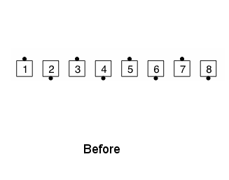
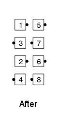
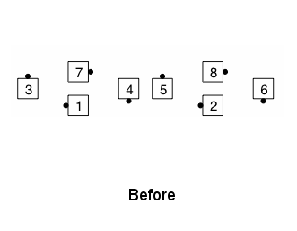
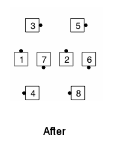

Split Counter Rotate: At Advanced, Split Counter Rotate is proper only from a 2x4 formation. At C-1, this restriction is removed: each half of the square does a Counter Rotate around the center point of its side. For example, Split Counter Rotate from a Tidal Wave gives Parallel Waves, and Split Counter Rotate turns Diamonds into Point-to-Point Diamonds and vice-versa.




© Copyright 1983, 1986-1988, 1995-2017 Bill Davis, John Sybalsky and CALLERLAB Inc., The International Association of Square Dance Callers. Permission to reprint, republish, and create derivative works without royalty is hereby granted, provided this notice appears. Publication on the Internet of derivative works without royalty is hereby granted provided this notice appears. Permission to quote parts or all of this document without royalty is hereby granted, provided this notice is included. Information contained herein shall not be changed nor revised in any derivation or publication.